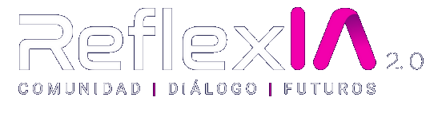

ITESO, Universidad Jesuita de Guadalajara

Ecosistema institucional para integrar la inteligencia artificial en la docencia, la investigación, la gestión y la vinculación del ITESO con enfoque ético, crítico y humanista. 2025–2030.
Creo que la AGI será la tecnología más poderosa que la humanidad haya inventado hasta ahora.
Sam Altman
La inteligencia artificial exige responsabilidad y discernimiento para orientar las herramientas por el bien de todos.
Papa León XIV, 2025
La IA será fundamental para resolver los mayores problemas del mundo, pero debe desarrollarse de manera que refleje los valores humanos.
Satya Nadella
Sobre ReflexIA
Programa interdepartamental del ITESO que integra la inteligencia artificial en la vida universitaria con criterios éticos, pedagógicos y humanistas, inspirado en la tradición ignaciana.
Integra la IA en la docencia, investigación, vinculación y gestión del ITESO, articulando esfuerzos a lo largo de toda la institución.
Promueve un uso estratégico, pedagógico y ético de la IA mediante la colaboración de docentes, estudiantes, investigadores y aliados externos.
Fija criterios de calidad y responsabilidad que vinculan justicia social, pensamiento crítico y el compromiso del modelo educativo jesuita.
A la comunidad académica, docentes, personal administrativo y de servicios en la mejora de procesos y servicios, con el uso de la Inteligencia Artificial.
La generación de conocimiento y la innovación mediante proyectos inter y transdisciplinarios enfocados en nuevas aplicaciones de la Inteligencia Artificial.
La integración significativa de la IA en los procesos de enseñanza y aprendizaje, personalizando trayectorias formativas y desarrollando el pensamiento crítico.
Conciencia ética y compromiso social sobre el uso de la IA, guiados por los valores ignacianos de justicia, inclusión y responsabilidad.
Una iniciativa interdepartamental orientada a promover el uso estratégico, ético y pedagógico de la inteligencia artificial en el ITESO.
Misión
Promover la apropiación ética, pedagógica, crítica y humana de la inteligencia artificial en la comunidad universitaria, impulsando un ecosistema colaborativo que fortalezca la innovación educativa, la investigación interdisciplinaria y la transformación social.
Visión
Consolidar al ITESO como referente en innovación con sentido social, integrando la inteligencia artificial con los valores ignacianos y el compromiso con el bien común, alineado con el Plan Institucional 2025–2030.
Propósito
Acompañar a la comunidad del ITESO en la apropiación crítica, ética y humanista de la IA para potenciar el aprendizaje, la investigación y la innovación, promoviendo decisiones que reflejen los valores ignacianos.
Cada proyecto de ReflexIA está orientado por estos valores en sintonía con la identidad ignaciana del ITESO.
Ética humanista
Uso responsable de la IA guiado por justicia, inclusión, dignidad humana y compromiso con el bien común.
Colaboración transdisciplinaria
Trabajo conjunto entre distintas áreas del conocimiento para abordar los retos complejos que plantea la IA.
Innovación con propósito
Soluciones creativas que integren la IA para mejorar procesos educativos e investigación, centradas en las personas.
Pensamiento crítico
Actitud analítica frente a las oportunidades y desafíos de la IA, favoreciendo decisiones informadas y responsables.
Acompañamiento transformador
Acompañar a la comunidad universitaria promoviendo confianza, formación continua y mejora integral.
23+
Acciones
formativas
394
Participantes
alcanzados
4
Comunidades
de práctica
49+
Departamentos
representados
110
Trabajos
académicos en IA
Cuatro dimensiones que articulan formación, gestión institucional e impacto social para integrar la IA en toda la vida universitaria.
Fortalece la docencia y la investigación mediante metodologías de IA responsable, formando personas competentes, libres y comprometidas con la transformación social.
Conecta la IA con las urgencias sociales y ambientales del entorno, convirtiendo al ITESO en agente de cambio al servicio de la justicia y el bien común.
Integra analítica y automatización ética para liberar recursos, agilizar servicios y fortalecer la sostenibilidad institucional sin despersonalizar la universidad.
Teje alianzas académicas, industriales y cívicas para co-crear conocimiento, transferir innovación y posicionar al ITESO como referente regional en IA humanista.
Las iniciativas estratégicas que permiten implementar ReflexIA en toda la comunidad universitaria con impacto medible y mejora continua.
Capacitación integral para docentes y personal en el uso crítico, ético y responsable de la IA: conferencias, talleres, diplomados y comunidades de práctica.
Diseño y emisión de microcursos con open-badges institucionales que certifican competencias en IA de forma flexible y progresiva.
Red interdepartamental de más de 49 representantes que articulan buenas prácticas, mentorías y reflexión crítica sobre IA en cada área de la universidad.
Programas de Aplicación Profesional que desarrollan soluciones de IA con impacto social real, vinculando formación académica y comunidad.
Proyectos interdisciplinarios sobre IA educativa y ética, con divulgación científica y conexión con redes nacionales e internacionales.
Plataforma de vigilancia tecnológica, análisis prospectivo y tableros de indicadores para monitorear riesgos y oportunidades de la IA.
Automatización ética, chatbots y analítica predictiva para agilizar servicios institucionales manteniendo el trato humano.
Un horizonte de cinco años que consolida una base institucional sólida para la apropiación crítica de la inteligencia artificial.
Etapa 1 · 2025–2026
Diseñar e implementar escenarios formativos piloto con docentes clave y establecer la gobernanza del proyecto.
Etapa 2 · 2027–2028
Consolidar y escalar la formación, integrar iniciativas de investigación y gestión en toda la universidad.
Etapa 3 · 2029–2030
Incorporar ReflexIA 2.0 en políticas, currículum y gestión, garantizando su sostenibilidad a largo plazo.